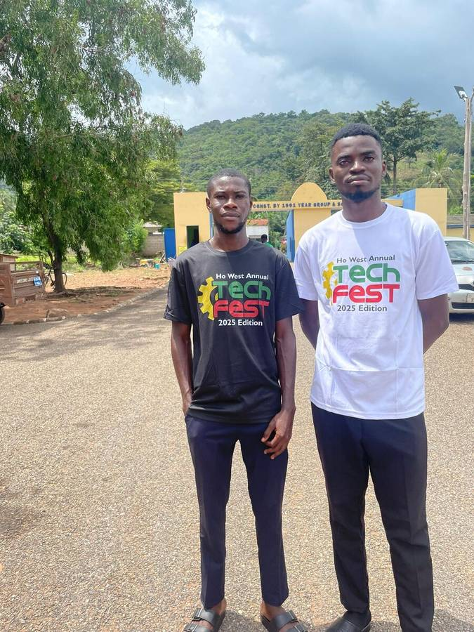
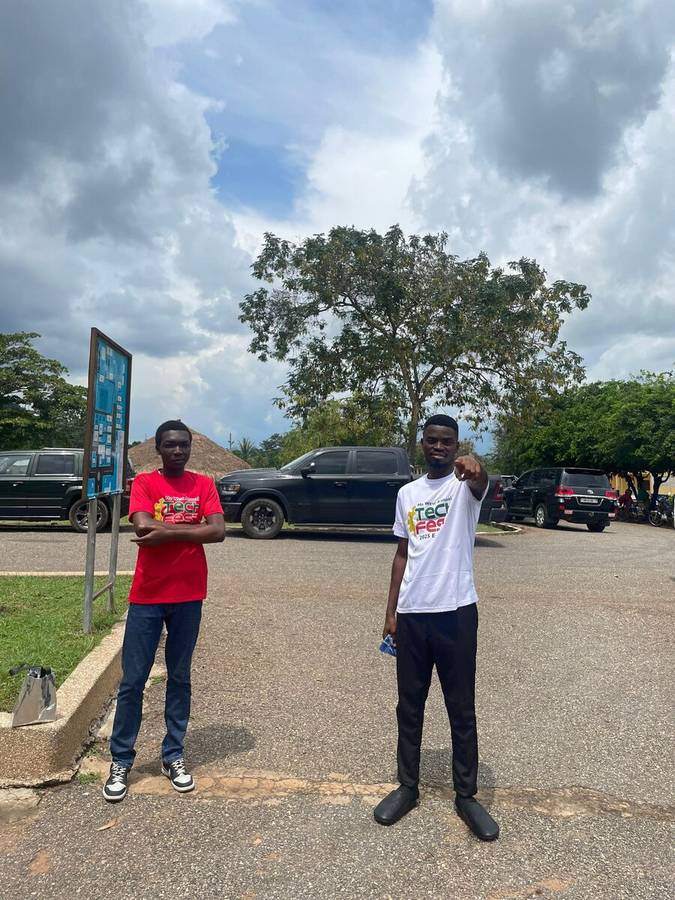
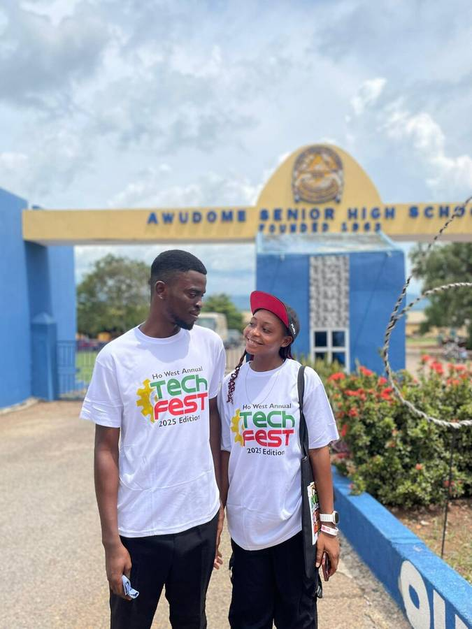

More than just code.

A Builder at Heart.
Technology shouldn't just be about fast servers or clean code—it's about the people who use it. That’s why I approach every project with empathy. I like to put myself in the user's shoes, understanding their struggles and building solutions that truly help. For me, "Digital Architect" isn't just a job title; it's a commitment to building a more connected, human world.
Work Experience
National Service Personnel – MIS & PR
NHIS | Ho, Ghana
Managed data systems and supported operations. Assisted with communications and digital engagement to improve service delivery.
Education
HND ICT
Ho Technical University (2021–2023)
Being part of the tech community in Ho, Ghana, is more than a professional network—it's home. Success Above Dreams represents my personal journey from a student with big ideas to a developer dedicated to real-world impact.
Life Outside the Screen.
Growth doesn't happen in isolation. I spend a lot of my time working alongside fellow builders, sharing what I know and learning from their journeys. From hands-on workshops to local community meetups, I'm always looking for ways to grow together.

Journey at Ho West Tech Fest
Where innovation meets the open road. These moments remind me that real-world impact happens when we step out and connect.

Unity in Development
Standing together to build a brighter future for the next generation of developers in our region.

The Strength of the Pack
Grateful for the team at Ketu-North NASPA who made our service year truly unforgettable and impactful.

Foundations of Innovation
Inspiration found in every conversation. These shared smiles are the foundation for the next big solution we'll build together.
Milestones & Honors.
I’m incredibly honored to have my work recognized by the community. These awards aren't just for me—they're for every user who has found value in the solutions I've built.

Commitment Beyond Duty
Honored for a year of dedicated service. This award is a testament to the belief that every role is an opportunity to leave a lasting impact on our community.

Innovation on the Ground
Taking technology to the streets. The 2025 Tech Fest was about proving that the digital future starts with real-world solutions that touch every corner of Ho West.

Inspiring the Next Generation
Returning to where it all began. Sharing the 'Success Above Dreams' vision with students, because building the future starts with inspiring its architects.

The Spirit of Shared Vision
Technology is better when built together. This milestone celebrates the partnerships and human connections that drive innovation across our region.